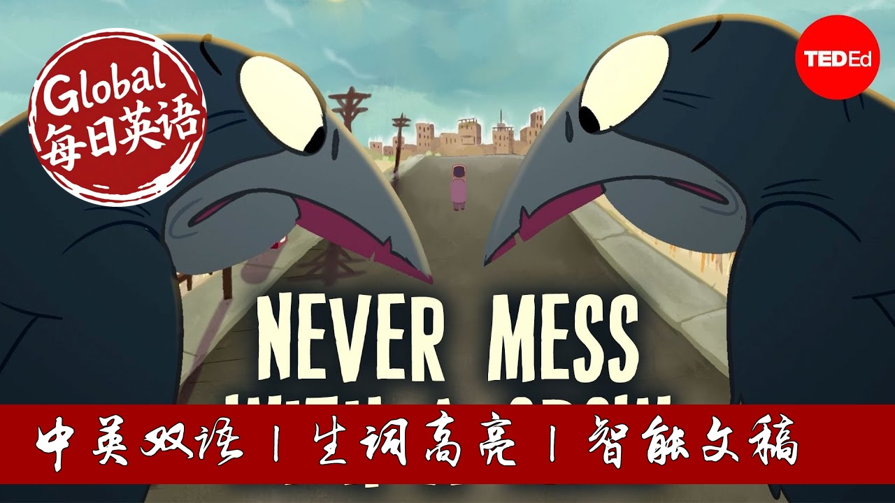

【TED科普：乌鸦到底有多聪明？】
Summary: Recent research reveals that corvids, the family of birds including crows, ravens, and magpies, possess remarkable cognitive abilities. These birds demonstrate strategic food caching, tool use, facial recognition, and even behaviors suggestive of planning for the future and understanding risk. Their intelligence is now considered comparable to that of primates, despite having a very different brain structure. This sophisticated cognition is thought to be crucial for their complex social lives and has been supported by a long developmental period that includes play.
摘要： 最新研究表明，包括乌鸦、渡鸦和喜鹊在内的鸦科动物拥有非凡的认知能力。这些鸟类表现出战略性的储食行为、工具使用、面部识别，甚至显示出为未来规划和理解风险的行为。尽管大脑结构截然不同，它们的智力现在被认为可与灵长类动物相媲美。这种复杂的认知能力被认为对其复杂的社会生活至关重要，并得到了包含玩耍在内的较长发育期的支持。

⏱️ Estimated Reading Time: 6 min.
📚 四级生词 📚 六级生词 📚 雅思生词 📚 托福生词 📚 专八生词 📚 SAT生词 📚 考研生词 📚 GRE生词
In one of Aesop’s 2,500-year-old fables, a crow is searching for water.
It spies a pitcher and discovers liquid inside— but it's beyond reach.
Soon, the crow begins dropping pebbles into the pitcher.
One by one, they displace the water, and the crow quenches its thirst.
Interestingly, this fable turns out to be pretty accurate.
In a 2014 experiment, scientists placed a food reward in a tube partially filled with water and watched as crow after crow dropped stone after stone in until the food was in beak-snatching distance.
This is just one of many fascinating displays of intelligence from corvids— the bold, brainy family of songbirds that includes crows, ravens, jays, and magpies.
To start, corvids are strategic when it comes to their food.
They ransack trash bins and snatch bites from under other birds’ beaks.
They also hoard and cache their food.
A single Clark's nutcracker, for instance, is thought to scatter some 30,000 pine nuts across more than 2,000 cache sites, which it can recover more than nine months later.
And in one experiment, scrub jays given waxworms and peanuts cached and retrieved the perishable worms first and left the peanuts for later.
It seemed the jays not only recalled where they buried things, but also what they buried and when.
What's more, experiments show that scrub jays will bury food when they know it won’t be available the next day, suggesting they can plan for future events too.
And corvid abilities extend beyond meal prepping.
In one experiment, a masked person trapped and released a wild crow.
When the masked person returned, crows dive-bombed them.
If they wore a different mask, however, they were ignored, suggesting that corvids can distinguish between— and remember— different human facial characteristics.
Crows also tend to gather around the bodies of their dead companions and caw— a behavior sometimes likened to a funeral.
And one study showed that crows were slower to return to an area where they’d seen a dead companion, suggesting they associated it with risk.
Corvids like New Caledonian crows also demonstrate an impressive proclivity for reasoning and tool use.
Even in the wild, they fashion sticks into hook-shaped probes for food.
Some Japanese crows have been observed placing nuts on the road, waiting nearby, then retrieving the rewards once passing cars have cracked them open.
But corvids also do things that are harder to explain.
They sometimes tote trinkets around, which might help them practice caching or serve as gifts to their partners.
And they've been spotted repeatedly sledding down roofs on plastic lids.
Play activities like this are relatively common in corvids, especially juveniles.
Corvids have a longer developmental period than other songbirds.
And it’s thought that play encourages learning and lays a strong foundation for their intelligent behavior.
Some researchers think cleverness is crucial to the highly social lives of corvids.
They breed cooperatively; live and communicate in large dynamic groups; share food; and mob predators together.
Some have lifelong partnerships where they recognize their companions, and track, respond to, and even predict each other's behaviors and desires.
Scientists today consider corvids among the smartest animals— a big step from where consensus used to be.
In the late 1800s, German scientist Ludwig Edinger compared primate and crow brains and interpreted the crow’s brain structure as primitive, dismissing their cognitive abilities.
This was a misinterpretation.
A raven, for example, has a brain that looks quite different than a Capuchin monkeys— and is about a third of the size.
But both animals have a similar number of neurons in their pallium, a brain region that’s associated with cognition.
So while corvid brains travelled a very different evolutionary path than primate brains, it was still one that brought them sophisticated cognition.
The next time you spot a crow, you can be assured of its smarts.
Just maybe don’t give it a bad reason to remember you.